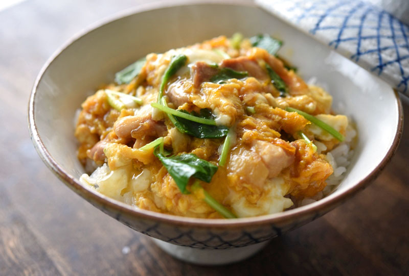
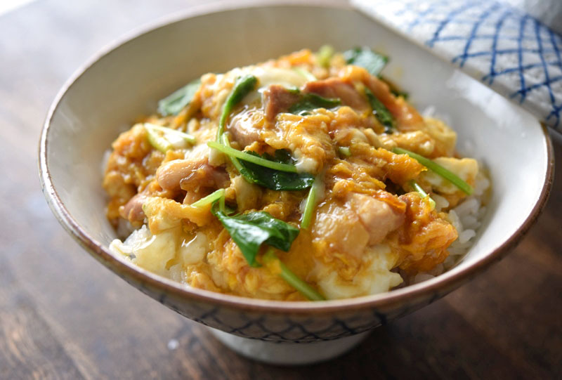

親子丼


鳥もも肉は１〜２㎝角か、１㎝幅ほどのそぎ切りなど、食べやすく火の通りやすい大きさに切ります。
卵をボウルに入れたら、箸で黄身を潰したあとに10〜15回くらい溶きます。
白身の塊も少し残して仕上げています。また、卵と三つ葉は入れるタイミングは同じなので、溶いた卵に1〜2㎝幅に切った三つ葉も混ぜ合わせておきます。
煮汁が沸いてきたら卵の入れ時です。火加減は弱めの中火で、ここで卵液の3/4を全体にまわしかけるように入れます。
１分ほどそのまま火にかけるのですが、ふつふつと鍋肌の煮汁が沸いて、まわりから卵が固まってくるので、固まりかけた卵をやさしく中央によせてあげます。